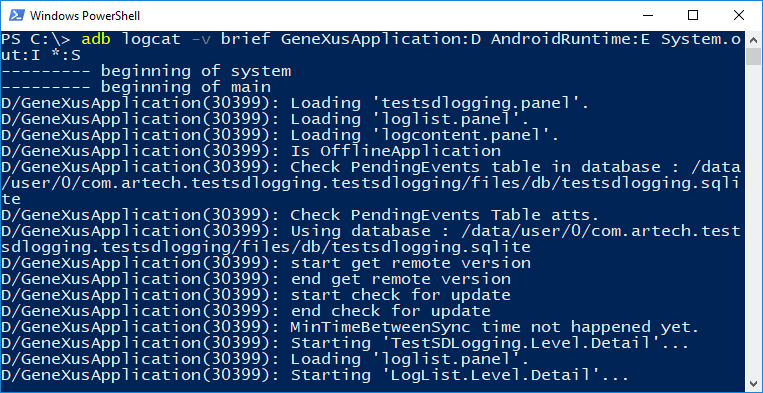
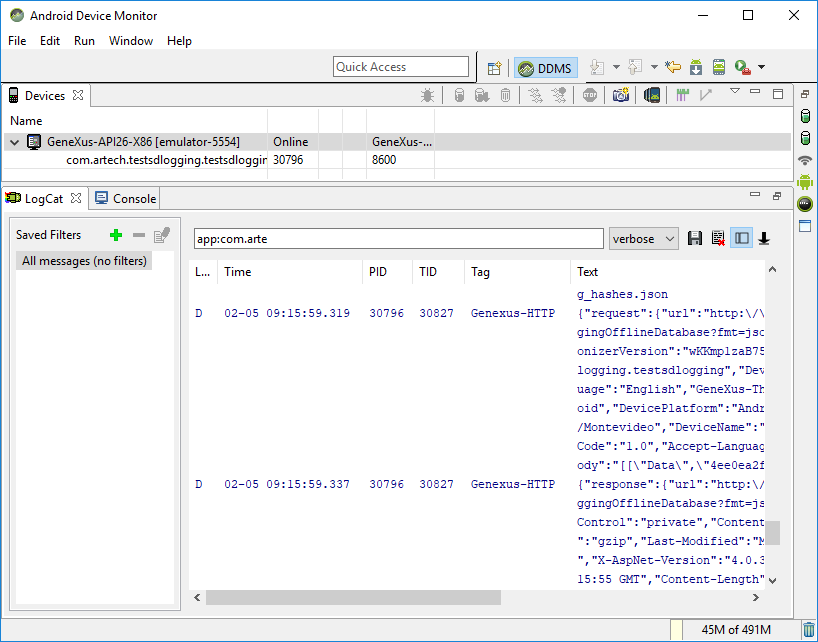
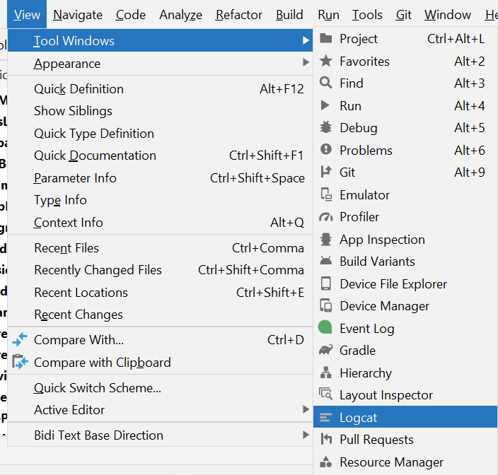
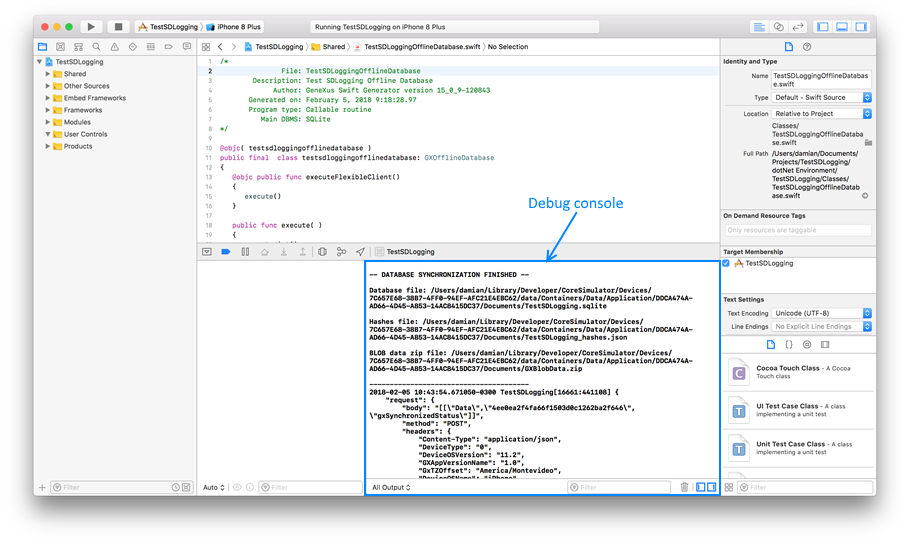
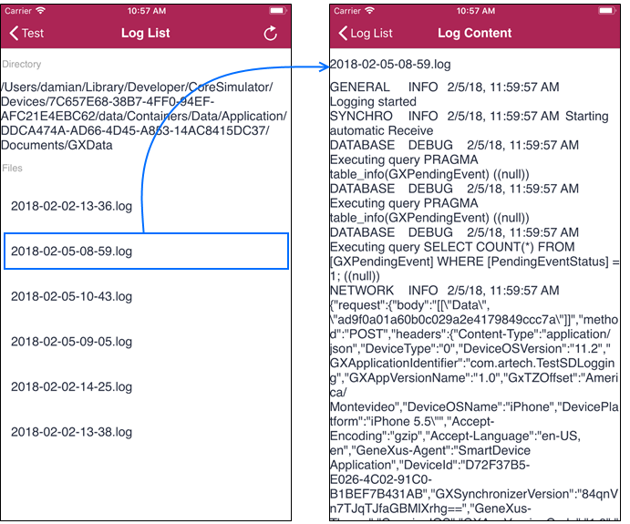

This document gives the first approach for debugging Smart Devices applications by inspecting log messages.
The developer must set the Enable Logging property in True (default value), and then indicate the log level to record for each feature.
This action can be made by setting the following properties at the Smart Device Main object's level:
You must build and run your Smart Device application (Main object)
There are three ways to debug Android applications, all of them by using the LogCat tool.
1) By using command-line tool
Android provides a command-line tool for inspecting log. For example, by opening a Command Prompt or PowerShell, the developer can create a log file by executing the following command. Note how we are filtering GeneXus applications debug messages (GeneXusApplication:D), Android runtime errors (AndroidRuntime:E) error and every custom message (System.out:I). For more information about command-line tool parameters, refer to LogCat command line tool.
> adb logcat -v brief GeneXusApplication:D AndroidRuntime:E System.out:I *:S > MyLogFile.txt
In case that you do want to write the result directly in your console, simply delete "> MyLogFile.txt" from the command.

Note: Requires %ANDROID_HOME% environment variable set (with the path to your Android-SDK directory).2) By using monitor.bat
Android-SDK provides the Android Device Monitor, a UI tool for running LogCat. It can be launched by opening monitor.bat script, located in C:/<Android-SDK>/tools.

Note: Requires %JAVA_HOME% environment variable set.The monitor.bat is deprecated, please use option 3 instead. Check more info here
3) By using Android Studio
If you are using Android Studio, you can run Android LogCat by navigating from View > Tool Windows > Logcat .
There are three ways to check the generated logs in iOS applications.
1) By using XCode Debug Console
The developer should open XCode and run the application from it. Then, log messages will be displayed on the debug Console.
2) By inspecting application log files
The application will generate *.log files in its data path (accessible from Directory.ApplicationDataPath). Then, you can read it from the application and send a report, or simply display its contents on it. The following example displays log files and their contents directly on the application (download it here, and include it in your KB).
3) By using logfile from simulator
Once the application is launched in a simulator (e.g. by F5 from GeneXus), the developer can inspect the log by doing Debug > Open System Log... from the system bar (or ⌘+/ shortcut).
| Platforms | Smart Devices (Android, iOS) |
| Backlinks | |
| Enable Logging property | Log external object |
| Notification Provider API | Offline Synchronization Log Level property |